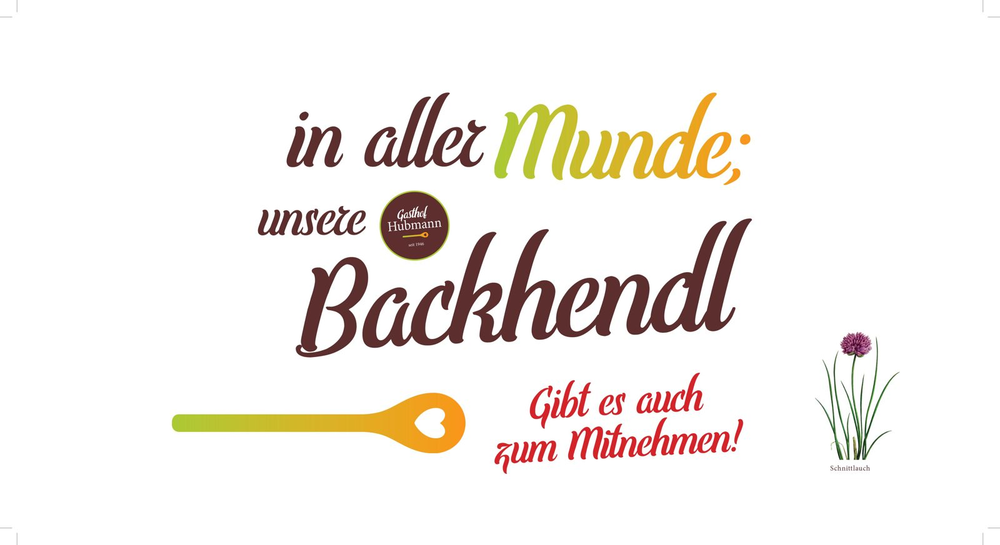

Taufe
Der kleine Rahmen in der urigen Gaststube.
Start › Gruppen & Feiern
Gruppen & FeiernDie GenussRegion Hirschbirne ist immer einen Besuch wert. Reisegruppen und Bustouristiker sind bei uns im Naturpark Pöllauer Tal stets gern gesehene Gäste.
Machen Sie mit Ihrer Familie, Ihren Mitarbeitern oder Vereinen einen Ausflug in den Naturpark Pöllauer Tal und lernen Sie die Genussregion Pöllauer Hirschbirne, gelegen an der Steirischen Schlösserstraße, kennen und auch lieben. Sie werden von unseren oststeirischen Köstlichkeiten geradezu verführt.
Auf Wünsche gehen wir nach Absprache gerne für Sie ein. Durch die besondere Lage ist unser Gasthof besonders bei Busgruppen sehr beliebt.

Egal ob Geburtstag, Erstkommunion, Firmung, Taufe oder Begräbnis – Ihre Feierlichkeit, Veranstaltung oder Ihr Seminar wird mit höchstmöglicher Professionalität und nach Ihren Wünschen zusammengestellt.
Der kleine Rahmen in der urigen Gaststube.
Mittagstafel für die ganze Familie.
Gasträume und parkähnlicher Gastgarten.
Für Betriebe, Vereine und Freundeskreise.
Vereinsausflug mit Busparkplatz vor der Tür.
Runde Geburtstage und Firmenjubiläen.
Tagen im Naturpark, mit Verpflegung aus dem Haus.
Sagen Sie uns, was Sie vorhaben – wir stellen es zusammen.
Das ganze Jahr über gibt es bei uns heimische Produkte aus Küche und Keller. Köstlicher Most, Säfte, Edelbrände sowie unsere hausgemachte Erdäpfelwurst, das knusprige, saftige, steirische Backhenderl oder die Almo-Schmankerl werden bei uns serviert. Nur die besten Zutaten und die Produkte aus unserer GENUSSREGION Pöllauer Hirschbirne finden bei uns den Weg auf den Tisch.
Sagen Sie uns Datum, Personenzahl und Anlass – wir erstellen Ihnen ein passendes Angebot.